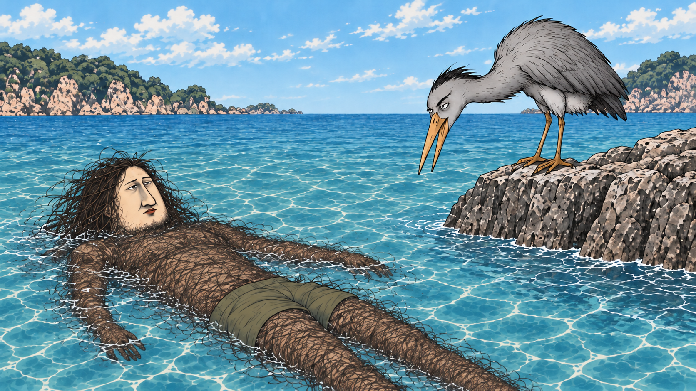

MENS SALON 毛太郎 / REVISION TEST
絵コンテの顔と、声の方向性を確認。
冒頭2カット＋最後のCTAの短いテストです。全編完成版ではありません。
今回の修正
① 男性の長い鼻・細い目、鳥の人面風の表情を原画に寄せ、動きを控えめに。
② 男性は低くぼそっと、鳥は淡々と返す掛け合いに。セリフの読みと間を再調整。
③ 最後は白地に大きな「毛太郎」とInstagram。絵コンテの男性と鳥をそのまま配置し、低い男性ナレーションで締めます。
本編の声は前回の雰囲気を指定した再生成です。完全に同一の声を固定したものではありません。CTAの「脱毛」「都度払い」は自動文字起こしで誤認識が残り、発音の検証が必要です。発音・イントネーションの自然さは音を出してご確認ください。
確認していただきたい点
男性と鳥の気持ち悪さ・顔つきが狙いどおりか。掛け合いの声と間、最後の声の低さが合うか。この方向で残りのシーンにも展開するための確認版です。
冒頭2：実は毛むくじゃらの男性

元の10シーン絵コンテを見る